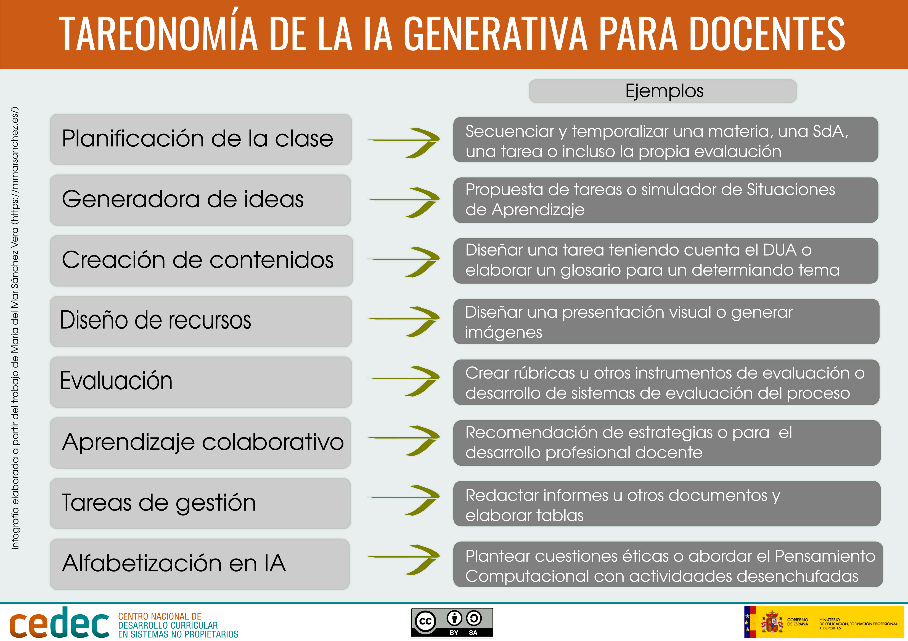
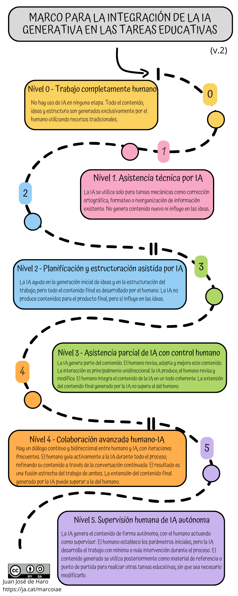

.
Gradu Amaierako Lana egiteko Ikastaroa
Oinarrizko Informazioa
Definizioa
DEFINIZIOA
Adimen artifiziala (IA) sistema informatiko gisa defini daiteke, gizakiok eskuarki erabiltzen ditugun gaitasunen bidez munduarekin elkarreragiteko diseinatuta. Horren barruan sartzen dira pertzepzioa, ikaskuntza, arrazoitzea, arazoak konpontzea, hizkuntza-interakzioa eta baita sormen-lanak sortzea ere. Gainera, IAk gizakiak gainditzeko gaitasuna du zenbait zereginetan, hala nola patroiak identifikatzean datu-bolumen handietan, nahiz eta beste arlo batzuetan, elkarrizketa konplexuak izatean adibidez, bere errendimendua haur txiki batena baino txikiagoa izan daitekeen. Termino zabalagoetan, IAk giza adimenaren sekretuak esploratzea eta adimen hori makinetara transferitzea bilatzen du, makinek gizakien antzeko funtzioak bete ditzaten ahalbidetuz.
(Miao et al., 2021)
ADIMEN ARTIFIZIAL MOTAK
ADIMEN ARTIFIZIAL TEKNOLOGIAK
Hizkuntza naturalaren prozesamendua (PLN)
IA erabiltzea testuak automatikoki interpretatzeko, analisi semantikoa barne, eta testuak sortzea.
Hizketa ezagutzea
Hitz egindako hitzari PLN aplikatzea.
Irudiak ezagutzea eta prozesatzea
IA erabiltzea aurpegia ezagutzeko, eskuz idazteko, irudiak manipulatzeko eta ibilgailu autonomoak ezagutzeko.
Eragile automatizatuak
IAren erabilera ordenagailu-jokoen gorabeheretan, software maltzurreko botak, laguntzaile birtualak,
robot adimendunak eta gerra automatizatua.
Afektua detektatzea
IA erabiltzea testuetan, portaeretan eta aurpegietan sentimenduak aztertzeko.
Iragarpenetarako datu-meatzaritza
IA erabiltzea diagnostiko medikoetarako, iragarpen meteorologikoetarako, enpresa-proiekzioetarako, hiri adimendunetarako, finantza-iragarpenetarako eta iruzurraren detekziorako.
Sormen artifiziala
IA erabiltzea argazki, musika, artelan edo istorio berriak sor ditzaketen sistemetan.
ADIMEN ARTIFIZIAL SORTZAILEA
Adimen artifizial sortzailea adimen artifizialaren (IA) eremu bat da, lehendik dauden datuetatik abiatuta eduki berria eta originala sortzera bideratua. IAren beste adar batzuek datuak bakarrik aztertzen edo sailkatzen dituzte, baina IA sortzailearen helburua informazio berria sortzea da, hala nola testua, irudiak, musika, bideoak, kodea eta gehiago. Teknologia honek ikasketa sakoneko eredu aurreratuak erabiltzen ditu datuetan patroiak ikasteko eta, ondoren, emaitza sortzaile eta originalak sortzeko patroi horien arabera.
(CEDEC, 2024)
IA sortzailearen funtsezko ezaugarriak
- Eduki berriak sortzea: Eredu sortzaileek aurretik ez zegoen edukia sor dezakete, eta, horri esker, ideiak, diseinuak eta kontzeptu berritzaileak sor daitezke.
- Sakoneko ikaskuntza-ereduak: Neurona-sare sakonak erabiltzen ditu, hala nola sare sortzaile antagonikoen ereduak (GANak) edo transformadoreak, datu-kopuru handiekin entrenatzen direnak.
- Zeregin sortzaileen automatizazioa: Hasiera batean, makinek sormen-lanak ezingo zituztela egin uste bazen ere, IA sortzaileak erakutsi du gai dela poemak idazteko, musika konposatzeko eta ikusizko lan harrigarriak ekoizteko.
IA sortzailearen aplikazioen adibideak
- Hizkuntza-ereduak: ChatGPT, galderen edo komandoen erantzunean testu koherente eta esanguratsua sortzen duena. Eredu horiek laguntzaile birtualetan, eduki-sorkuntzan eta itzulpen automatikoan erabiltzen dira.
- Irudiak eta Arte Sortzailea: DALL-E eta Midjourney bezalako tresnek irudiak sor ditzakete testu-deskribapenetatik abiatuta, arte abstraktutik hasi eta ilustrazio hiperrealistetaraino.
- Musika sortzailea: Hainbat estilotako doinu eta musika-pista berriak osatzen dituzten aplikazioak, entretenimenduan eta musika-industrian erabiltzen direnak.
- Softwarea garatzea: Kodea sor dezaketen ereduak, programatzaileek funtzioak sortzean edo arazo espezifikoetarako irtenbideak iradokitzean egiten duten lana erraztuz.
- Bideo- eta animazio-produkzioa: gidoietatik abiatuta bideoak sortzeko gai dira, baita marketinean, hezkuntzan eta zineman aplikazioetarako animazio osoak sortzeko ere.
Baliabide Didaktikoak Sortu
- Testua sortzea
- Ebaluazioa eta jarraipena
- Egokitze-ikaskuntza
- Irudiak sortzea
- Baliabide gehigarriak
IA sortzailea hezkuntza-zereginetan integratzeko esparrua
Hezkuntza-eremuan adimen artifizialaren erabilera kategorizatzen duen proposamena da.
MAILAK
0 maila – Lana erabat gizatiarra
IA ez da etapa bakar batean ere erabiltzen. Eduki, ideia eta egitura guztiak gizakiak bakarrik sortzen ditu, baliabide tradizionalak erabiliz.
1. maila – IAren bidezko laguntza teknikoa
IA zeregin mekanikoetarako bakarrik erabiltzen da, hala nola ortografia-zuzenketarako, formateorako edo dagoen informazioa berrantolatzeko. Ez du eduki berririk sortzen, eta ez du eraginik ideietan.
2. maila – IAk lagundutako plangintza eta egituraketa
IAk hasierako ideiak sortzen eta lana egituratzen laguntzen du, baina azken eduki guztia gizakiak garatzen du. IAk ez du azken produkturako edukirik sortzen, baina eragina du ideietan.
3. maila – IAren laguntza partziala giza kontrolarekin
IAk edukiaren zati bat sortzen du. Gizakiak edukia berrikusten, egokitzen eta hobetzen du. Elkarrekintza norabide bakarrekoa da nagusiki: IAk sortzen, berrikusten eta aldatzen du gizakia. Gizakiak osotasun koherente batean integratzen du IAren edukia. IAk sortutako azken edukiaren hedadurak ez du gizakiarena gainditzen.
4. maila – Giza lankidetza aurreratua - IA
Gizakiaren eta IAren arteko etengabeko eta bi norabideko elkarrizketa dago, iterazio sarriekin. Gizakiak aktiboki gidatzen du IA prozesu osoan zehar, etengabeko elkarrizketaren bidez edukia finduz. Emaitza bien lanaren fusio estua da. IAk sortutako azken edukiaren hedadura gizakiarena baino handiagoa izan daiteke.
5. maila. Giza gainbegiratze autonomoa
IAk modu autonomoan sortzen du edukia, gizakiak gainbegirale gisa jardunez. Gizakiak hasierako parametroak ezartzen ditu, baina IAk prozesuan zehar gutxieneko esku-hartzearekin edo esku-hartzerik gabe garatzen du lana. Sortutako edukia, ondoren, beste hezkuntza-lan batzuk egiteko erreferentzia-material edo abiapuntu gisa erabiltzen da, aldatu beharrik gabe.
Testuen IA sortzailea
Hizkuntza naturala prozesatzeko teknologiak
ADIBIDEAK
Prompt: IA sortzailerako jarraibideak
Txat-leiho batean idazten ditugun mezuak, adibidez ChatGPTn, IAri ematen dizkiogun jarraibideak dira, prompts izenekoak. IA batetik lortzen ditugun emaitzak prompt horiek eraikitzeko moduaren eta izan dugun elkarrizketaren araberakoak izango dira. Ezin dugu galdera bakar batekin erantzun hoberik espero, eta ezin dugu pentsatu ere egin berdin dionik nola zuzentzen garen Ezker Batura, nola egiten ditugun bi gauza horiek erantzunen kalitatea eta dugun esperientzia.
Eskema honi jarrai diezaiokegu: (RITA Eredua)
[Rola] [Zeregina] [Testuingurua] [Erantzuna nori zuzenduta dago]
Ez da beharrezkoa ordena hori jarraitzea, baina prompt osatuago batekin emaitza hobeak lortu ahal izango ditugu.
- Rola: Eszenatoki jakin batean hizkuntza-eredua nor dela suposatzen den deskribatzen da. Beharbada, kontzeptu bat azaltzen duen irakasle bat da, lagun bat aholkuak ematen, aditu bat arlo jakin batean, etab. Rol horrek ereduak emango duen erantzunaren tonua eta testuingurua definitzen laguntzen du.
- Ataza: Hau da landu nahi den ataza espezifikoa edo gaia. Gai jakin bati buruzko galdera izan daiteke, zeregin bat duen laguntza-eskaera, kontzeptu baten azalpena, etab. Osagai horrek norabide argia ematen du ereduaren erantzunerako.
- Testuingurua: Hau da egoera definitzen edo ereduari erantzuteko informazio gehiago ematen laguntzen duen sakoneko informazioa edo xehetasun gehigarriak. Erabiltzaileak orain arte egindakoari buruzko informazioa izan daiteke, konpontzen saiatzen ari diren arazo bati buruzko xehetasunak, etab.
- Erantzuna nori zuzenduta dagoen: Erantzuna pertsona edo pertsona-talde honi zuzenduta dago. Erabiltzailea bera izan liteke, maila eta irakasgai jakin bateko ikasleak, audientzia orokorragoa, etab. Osagai horrek erantzunean erabili beharreko xehetasun-maila, tonua eta hizkuntza definitzen laguntzen du.
Hezkuntzako Prompt-ak
R-I-T-A ereduaren zehaztapena hezkuntzarako:
(Rola eta testuingurua, Informazioa, Zeregina, Moldagarritasuna).
Bereziki hezkuntza-egoeretarako sortu da, eta oso emaitza onak lortu ditu horrelako prompt-ak sortzeko. Badira prompt-ak eraikitzeko beste eredu edo eskema batzuk, baina guztiak enpresa-mundurako asmatu dira.
- Rola eta testuingurua: IAk bere gain hartu behar duen zeregin espezifikoa definitzen du fase honek. IAk ordezkatuko duen pertsonaiaren ezaugarriak eta trebetasunak biltzen ditu, baita haren prestakuntza akademikoa eta esperientzia garrantzitsua ere. Adibidez, IAk gai jakin batean aditua den irakasle baten rola har dezake, tutore laguntzaile batena, aholkulari akademiko batena, besteak beste. RITA ereduaren testuingurua jarduera garatuko den hezkuntza-inguruneari eta irakatsi eta ikasteko prozesuaren inguruko baldintza espezifikoei dagokie. Horren barruan sartzen dira ikasleen hezkuntza-maila, landuko den gaia, eskura dauden baliabideak eta ikasle-taldearen ezaugarri bereziak.
- Informazioa: Eredu honetako prompt-en ezaugarria da IA dela erabiltzaileari lana egiteko behar dituen datuak galdetzen dizkiona; informazio hori normalean ez da prompt horretan bertan sartzen. Hemen, IAk galdera espezifikoak eginez hasten du elkarrizketa, zeregin nagusiari ekin aurretik erabiltzailearen beharrezko informazioa lortzeko. Galderak erabiltzailearen testuingurua, beharrak eta helburuak hobeto ulertzeko diseinatuta daude. Fase honek IAk erantzun zehatza eta erabilgarria emateko behar diren datu guztiak izatea bermatzen du. IAk erabiltzaileari zer behar duen galdetzearen abantaila da prompt horretan sartu beharrean, prompt-ek ez dutela aurretiko ediziorik behar, eta, beraz, erabiltzeko errazagoak direla.
- Ataza: Lortutako informazioarekin, IAk esleitutako ataza espezifikoa egiten du. Horrek, besteak beste, jarduerak garatzea, proiektuak planifikatzea eta testuak aztertzea ekar dezake. Ataza modu pertsonalizatuan gauzatzen da, erabiltzaileak emandako informazioa kontuan hartuta.
- Moldagarritasuna: IAk gai izan behar du egokitzeko eta galdera gehigarriak egiteko, egin beharreko lanaren izaeraren arabera. Fase honek elkarrekintzak doitzeko eta fintzeko aukera ematen du, erabiltzailearen hezkuntza-helburuak modu eraginkorrean eta pertsonalizatuan betetzen direla ziurtatzeko. Horrela, prompt dokumentuan erabiltzaileari bere ustez behar duen edozein informazio gehigarri galdetzeko aukera gehitzen da.
Hezkuntza-Prompt adibideak
Biblioteca Avanzada de Prompts Educativos — IA en educación
Irudien IA sortzailea
Irudien adimen artifizial generatiboak, testuarenaren antzera, aukera ematen digu irudi erabat berriak eta errealistak sortzeko hainbat estilorekin (komikia, olioa, fotorrealistak, Dalíren estiloarekin, etab.).
ADIBIDEAK
Hasi gabe:
Izena eman ondoren:
- Generador de imágenes de Bing
- Recraft.
- DALL·E 2.
- Leonardo.AI
- Ideogram.
- NightCafe Studio
- Flux Pro AI
- Midjourney
Irudi Prompt-ak
Irudiak sortzen dituzten IAk testuaren deskribapen labur batetik abiatuta funtzionatzen dute. Erabilitako zerbitzuaren arabera, aukera desberdinak izango ditugu, hala nola estiloa (argazkigintza, manga, pintura, etab.), beste batzuetan, DALL · E 2 edo Bing Chat kasu, ez dute. Kasu horietan, nahi dugun estiloa prompt horretan bertan jarriko dugu.
irudi Prompt adibideak
Search prompts for Stable Diffusion, ChatGPT & Midjourney - PromptHero
Apoyo visual


BIBLIOGRAFIA
Comisión Europea. (2022). Directrices éticas sobre el uso de la inteligencia artificial (IA) y los datos en la educación y formación para los educadores. Publications Office of the European Union. https://op.europa.eu/en/publication-detail/-/publication/d81a0d54-5348-11ed-92ed-01aa75ed71a1/language-es
De Haro, J. J. (2024, Aug 2,). Marco para la integración de la IA generativa en las tareas educativas..Bilateria. https://educacion.bilateria.org/marco-para-la-integracion-etica-de-la-ia-generativa-en-las-tareas-educativas
Gobierno de Canarias. (2024). La Inteligencia Artificial en el Ámbito Educativo. Gobierno de Canarias. https://www.gobiernodecanarias.org/cmsweb/export/sites/educacion/web/_galerias/descargas/otros/2024_02_29_guia_ia_en_educacion.pdf
INTEF. (2024). Guía sobre el uso de la Inteligencia Artificial en el Ámbito Educativo. INTEF. https://code.intef.es/wp-content/uploads/2024/07/Gu%C3%ADa-sobre-el-uso-de-la-IA-en-el-%C3%A1mbito-educativo-INTEF_2024.pdf
Inteligencia artificial (2024, Sept 27). Wikipedia. Retrieved Oct 31, 2024, from https://es.wikipedia.org/w/index.php?title=Inteligencia_artificial&oldid=162702449
Miao, F., Holmes, W., Huang, R., & Zhang, H. (2021). Inteligencia artificial y educación: guía para las personas a cargo de formular políticas. UNESCO. https://unesdoc.unesco.org/ark:/48223/pf0000379376
Miao, F., & Shiohira, K. (2024). AI competency framework for students. UNESCO. https://doi.org/10.54675/JKJB9835
Morandín-Ahuerma, F. (2022). What is Artificial Intelligence? International Journal of Research Publication and Reviews, 3(12), 1947–1951. https://ijrpr.com/uploads/V3ISSUE12/IJRPR8827.pdf
Perkins, M., Furze, L., Roe, J., & MacVaugh, J. (2024). The Artificial Intelligence Assessment Scale (AIAS): A Framework for Ethical Integration of Generative AI in Educational Assessment. Journal of University Teaching and Learning Practice, 21(6). https://doi.org/10.53761/q3azde36
Ondoko lizentziak babestua Creative Commons: aitortu-PartekatuBerdin 4.0 Lizentzia